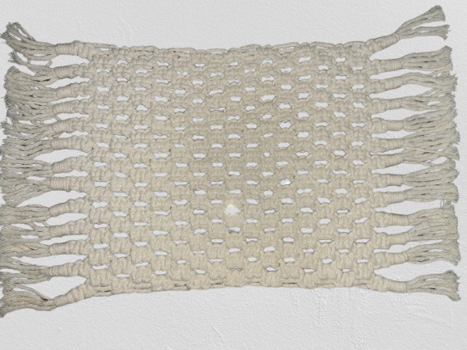
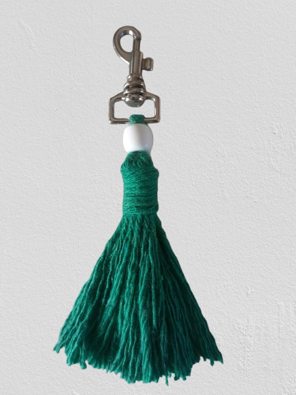
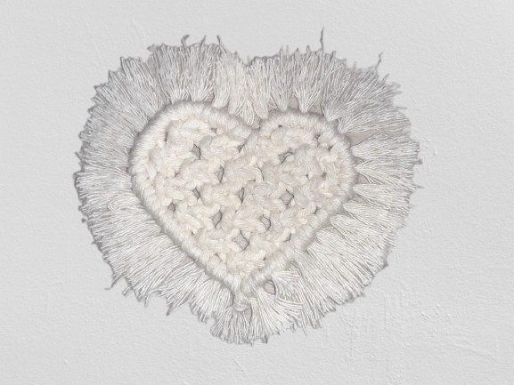
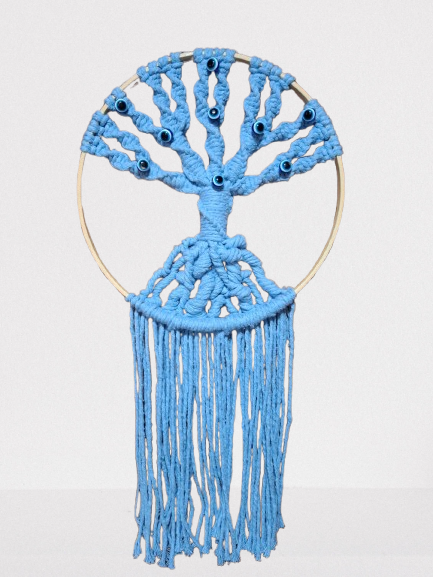

Produtos de Macramê
Jogo americano
Jogo americano de macramê na cor cru, feito à mão com fios de algodão, traz um toque rústico e elegante à mesa.
Cores disponíveis: Azul Bebê, Cru, Marrom, Rosa Bebê,Verde e mais.
R$40,00
Chaveiro de Tassel
Charmoso e versátil, é perfeito para dar um toque de cor a bolsas, mochilas ou chaves, unindo praticidade e estilo em um único acessório.
R$5,00
Porta-copos de coração
Elegante e sutil, adiciona um estilo natural e acolhedor à decoração. Pode ser feito combo junto ao jogo americano.
R$20,00
Chaveiro Trançado

Chaveiro vermelho trançado à mão com fio acetinado. Brilhante e resistente, é um acessório marcante que une beleza e praticidade no dia a dia.
R$15,00
Árvores da Vida
Com design terno e simbólico, representa força, equilíbrio e renovação, unindo beleza e significado em um acessório único
R$55,00